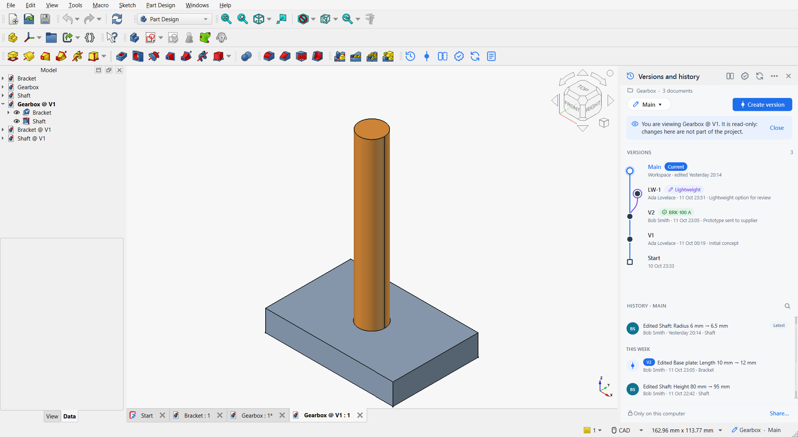
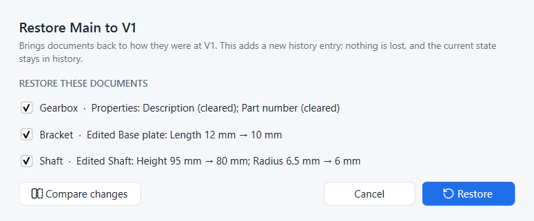

Go back in time
Goal: look at an earlier state of a design, then bring it back.
You need: a project with a few saves and at least one version (see the quick start).
View an earlier state
Viewing never changes your project. It opens a read-only copy of a document as it was at that point.
-
In History, hover the entry you want and click the eye. Or select it and press Enter, or double-click it.
-
For a version, double-click its node in the Versions graph, or right-click it and choose View V1.
-
If the point contains several documents, Strata opens the one you are working on; otherwise it asks which one.
The copy opens in a new tab labelled, for example, Gearbox @ V1. Linked parts are opened from the same point in time, so an assembly shows the parts exactly as they were. A blue banner reminds you that the copy is read-only; click Close when you are done.

You may edit and even save the copy, for example to measure something, but those changes never become part of the project. Copies live in .strata/previews and can be deleted at any time.
|
See what changed at a point
Select a history entry. The details card lists each change:
-
+a feature was added,−deleted, -
~edited, with old and new values, for example Base plate · Length 10 mm → 12 mm, -
a muted Rebuilt … line for features that were only recomputed as a consequence.
Right-click the entry and choose Show what changed here for the full comparison, or Compare with latest to compare that point with now. See Compare two designs.
Restore the whole project
-
Hover the entry or version and click the restore arrow, or right-click it and choose Restore to this point….
-
Strata saves any unsaved changes first, if you agree, and opens the Restore dialog. It lists every document that differs from that point, with what restoring would undo.
-
Untick the documents that should keep their current state. Click Compare changes to see the differences first.
-
Click Restore.

The ticked documents are rewritten on disk and reloaded in FreeCAD. History gains an entry such as Restored to V1. The state you left is still there, one entry further down, and you can restore it again.
| This is Onshape’s Restore with its per-tab Keep / Replace choice: a ticked document is replaced by the earlier state, an unticked one is kept. See Onshape: Versions and history. |
Restore a single document
Sometimes only one part should go back, for example the bracket, while the shaft keeps its latest changes.
-
Right-click the history entry.
-
Choose Restore only Bracket…. These entries are offered for the documents that changed in that entry.
Only that document is brought back; the history entry reads Restored Bracket to ….
Same thing in Python
# SPDX-License-Identifier: LGPL-2.1-or-later
"""Minimal working example: version control for one part, from a script.
Run with FreeCAD's console (Strata installed):
freecadcmd first_project.py [empty-folder]
"""
import os
import sys
import tempfile
import FreeCAD as App
from strata.project import Project
folder = next((a for a in sys.argv[1:] if not a.endswith(".py")), None) or tempfile.mkdtemp()
path = os.path.join(folder, "Plate.FCStd")
# A simple part, saved into the project folder
doc = App.newDocument("Plate")
plate = doc.addObject("Part::Box", "Plate")
plate.Length, plate.Width, plate.Height = 100, 60, 8
doc.recompute()
doc.saveAs(path)
# 1. Turn on version control for the folder (records "Start")
project = Project.create(folder, "Ada Lovelace", "ada@example.com")
# 2. Edit and save. In the FreeCAD window Strata records every save by itself;
# from a script, call record() after saving.
plate.Height = 10
doc.recompute()
doc.save()
project.record()
# 3. Name the milestone
v1 = project.create_version("V1", "First prototype")
# 4. Keep working ...
plate.Height = 4
doc.recompute()
doc.save()
project.record()
print("Height now:", plate.Height)
# 5. ... and go back in time. Restore adds a new history entry; nothing is lost.
App.closeDocument(doc.Name)
project.restore(v1.sha)
doc = App.openDocument(path)
print("Height after restoring V1:", doc.getObject("Plate").Height)
print("History (newest first):")
for entry in project.history():
marks = " [%s]" % ", ".join(entry.versions) if entry.versions else ""
print(" %-13s %s%s" % (entry.author, entry.title, marks))
App.closeDocument(doc.Name)
project.repo.close()freecadcmd first_project.pyHeight now: 4.0 mm
Height after restoring V1: 10.0 mm
History (newest first):
Ada Lovelace Restored to V1
Ada Lovelace Edited Plate: Height 10 mm → 4 mm
Ada Lovelace Edited Plate: Height 8 mm → 10 mm [V1]
Ada Lovelace Start